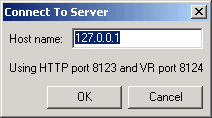
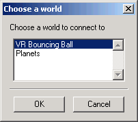
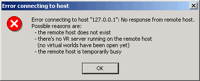

Viewing the Simulink 3D Animation Server Virtual Worlds Remotely
To view virtual worlds from the Simulink 3D Animation server in Orbisnap, you must have
- MATLAB running a Simulink 3D Animation server session
- The version of the Simulink 3D Animation server to which you want to connect must be compatible with the Orbisnap version you are running. For example, you cannot connect Orbisnap to the Simulink 3D Animation version 3.1.
- Network access between the client computer (running Orbisnap) and host computer (running MATLAB and Simulink 3D Animation server)
| Note
Note that if you expect Orbisnap to access a virtual world on the Simulink 3D Animation server from a remote computer, you must make that virtual world available for Internet viewing. In the Simulink 3D Animation viewer for the virtual world you want to make available, select Simulation->Block Parameters, select the Allow viewing from the Internet checkbox, then click OK.
|
Note the following when using Orbisnap remotely
- Although you can visualize a virtual world from the Simulink 3D Animation server in Orbisnap, any navigation or rendering in one viewer is not reflected in the other. For example, any navigation you do on the virtual world in Orbisnap does not reflect in the virtual world in the Simulink 3D Animation viewer and vice versa.
- You cannot start or stop a simulation of the virtual world in Orbisnap. You can see a simulation on Orbisnap only if the virtual world simulates in the Simulink 3D Animation server.
- The simulation might slow when you connect Orbisnap remotely to the Simulink 3D Animation server.
- Start Orbisnap. For example, in Windows, double-click
orbisnap.bat .
- Orbisnap is displayed.
- In Orbisnap, select File -> Connect to Server.
- The Connect to Server dialog is displayed.
- Enter the IP address or host name of the host computer running the Simulink 3D Animation server (
127.0.0.1 by default), the HTTP port number (8123 by default), and the port number at which the Simulink 3D Animation server is listening (8124 by default).

- The Choose a world dialog is displayed. This dialog lists all the virtual worlds that are currently active on the Simulink 3D Animation server.

If no virtual world has ever been opened in this session of the Simulink 3D Animation server, Orbisnap displays a message. If you see this message, contact your counterpart running the Simulink 3D Animation server to better synchronize your activities. A virtual world must be fully active on the Simulink 3D Animation server for Orbisnap to remotely access it.

- Select a virtual world.
- Click OK.
- Orbisnap displays the selected virtual world of the remote Simulink 3D Animation server.
- Navigate and render the virtual world as you wish.
- To close Orbisnap, select File -> Close.
Using the menus, toolbar, and navigation panel, you can perform many of the same operations on the virtual world that you can with the Simulink 3D Animation viewer. See Orbisnap Interface for a description of the Orbisnap interface. See Orbisnap Command Line for a description of the Orbisnap command-line options.
 | Viewing Prerecorded WRL Animations or Virtual Worlds | | Orbisnap Interface |  |